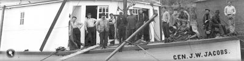
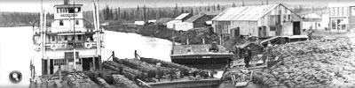
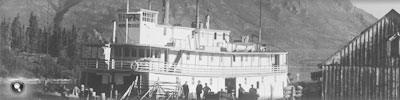
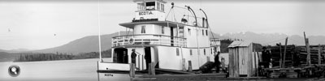
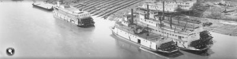

Les bateaux à aubes les plus grands pouvaient transporter jusqu’à 150 passagers. Le pont principal, ou « Texas deck », offrait de meilleures places que le pont d’observation (la timonerie, sur le pont le plus élevé, était désignée sous le nom de « Monkey Island », ou « île aux singes »...).
L’horaire des bateaux qui transportaient surtout des passagers était intimement lié à celui des navires côtiers qui s’arrêtaient à Skagway; ce n’était pas le cas des navires qui transportaient surtout des marchandises, comme le S.S. Klondike I.
« ... trois ponts de plus en plus petits s’empilaient sur la coque, comme les étages d’un gâteau de noces... »
L’hébergement était réduit à sa plus simple expression sur la plupart des bateaux à aubes; toutefois, les bateaux réservés aux touristes étaient renommés pour la qualité du service et des repas.
Les grands navires qui naviguaient sur le cours supérieur du fleuve transportaient de 200 à 250 tonnes de fret. Introduites en 1905, les barges permettaient de doubler ou presque la capacité de chargement des bateaux, mais augmentaient de moitié la consommation de carburant et la durée du trajet.
Pour faciliter la manutention des marchandises, le fret était déposé sur le pont principal, qu’on appelait « freight house » (littéralement : « hangar à marchandises »). Les bateaux à aubes servaient à transporter tous les types de marchandises, de l’« acide carbonique » au « zinc en feuilles ou en rouleaux ». Lorsque le niveau de l’eau n’était pas suffisant et que la navigation était plus difficile, les exploitants augmentaient les tarifs pour décourager les clients de voyager par la voie des eaux. En été, les bateaux naviguaient à toute heure du jour et de la nuit.
Tourisme
Les longues journées d’été et le paysage spectaculaire faisaient du Yukon une destination voyage très prisée, et le tourisme devint une importante part des activités de la BYN Co. Le S.S. Tutshi, mis à l’eau en tant que bateau de tourisme en 1917, amenait des passagers en excursion aux lacs du Sud.
L’intérieur du « salon » du S.S. Susie, un navire de la Alaska Commercial Company naviguant sur le cours inférieur du fleuve.
Archives du Yukon, photographie provenant de la collection des archives de l’Alaska, nº 3107
Chargement d’une cargaison d’or de la Banque de Commerce sur un bateau à aubes à Dawson, vers 1899.
Archives du Yukon, collection Bill Roozeboom, nº 6289
(À gauche) Timonerie du S.S. Prospector.
Archives du Yukon, collection de la famille Scott/Phelps, 89/31 nº 59

Le S.S. Casca à Hootalinqua, aucune donnée disponible.
Archives du Yukon, Collection du Musée MacBride, nº 4006
Membres d’équipage sur le pont du S.S. Gen. J.W. Jacobs, Whitehorse, aucune donnée disponible.
Archives du Yukon, fonds E.J. Hamacher (collection Margaret et Rolf Hougen), 2002/118 nº 99
Le S.S. Canadian et trois barges, transportant 600 tonnes de minerai d’argent, à Mayo, le 19 mai 1923.
Archives du Yukon, fonds Bill Hare, nº 6642
Inscriptions au journal de bord (détail).
Archives du Yukon, fonds WP&YR
Le S.S. Gleaner à Taku, sur le lac Tagish. Les touristes allaient de Carcross à Taku, puis poursuivaient par le train Taku Tram sur une distance d’environ 3 kilomètres (2 milles) jusqu’à Scotia Bay sur le lac Atlin, où ils montaient à bord du S.S. Scotia pour parcourir les 13 kilomètres (8 milles) qui les séparaient d’Atlin. Ce parcours panoramique a conservé la faveur des touristes pendant de nombreuses années.
Archives du Yukon, fonds de la famille Dennett, nº 3174
(À gauche) Note de salle à manger
Archives du Yukon, fonds Fred George Archives du Yukonlwin, 94/57, MSS 287
Le S.S. Tutshi et un avion Junkers W-34 à Carcross, 1933.
Archives du Yukon, collection Eldon Bjerke, 83/20 nº 1
Le S.S. Scotia à Scotia Bay.
Archives du Yukon, fonds E.J. Hamacher (collection Margaret et Rolf Hougen), 2002/118 nº 64
Un endroit très achalandé : le chantier maritime de Whitehorse, vers 1901; dix bateaux à aubes sont en cale sèche, quatre sont à l’eau.
Archives du Yukon, fonds E.J. Hamacher (collection Margaret et Rolf Hougen), 2002/118 nº 95